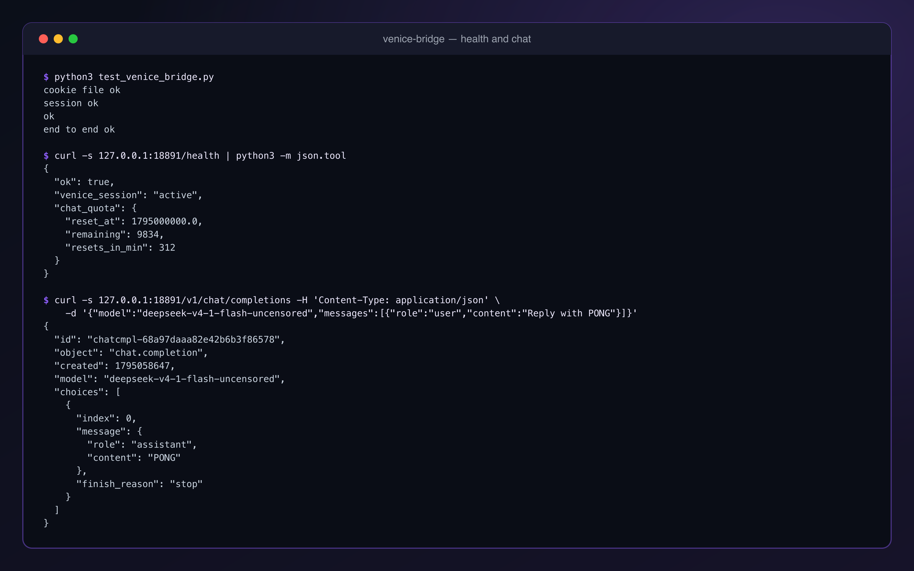
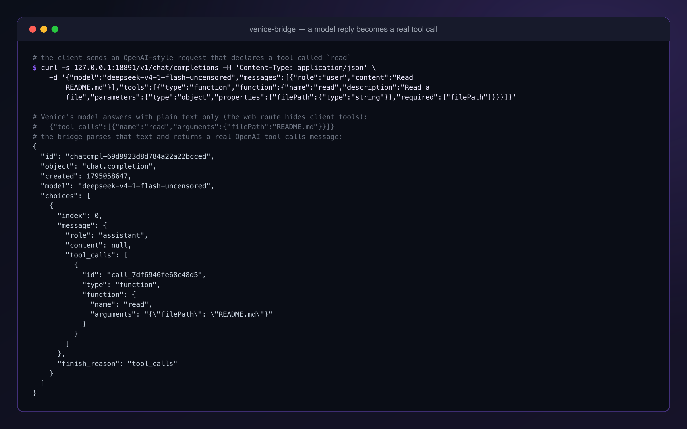

venice-bridge
venice-bridge is a free, open-source local bridge for macOS that lets OpenCode and other OpenAI-compatible coding agents use a venice.ai web subscription, with working tool calls.
It is one Python file (venice_bridge.py, about 1,500 lines) plus tolerant_parser.py. It runs an HTTP server on 127.0.0.1:18891 that speaks OpenAI Chat Completions, and forwards each request to the backend of the venice.ai web app, authenticated with your own browser login. It does not use the paid Venice API and needs no API key.
- Unofficial. Not affiliated with, endorsed by, or supported by Venice.ai.
- Undocumented endpoints. It talks to the web app's own backend, which can change or break at any time.
- Terms-of-service risk. It automates your own logged-in web session; that may be against Venice's terms of service. You use it at your own risk.
- Your own account only. Do not share cookies or accounts. The cookie is a live credential for your Venice account: never commit it, never share it.
OpenAI-compatible
POST /v1/chat/completions (streaming and non-streaming), GET /v1/models, GET /health, POST /reload.
Working tool calls
Venice's web routes hide client tools from the model, so the bridge emulates them in text and returns real OpenAI tool_calls.
Web subscription, no API key
Uses the __client cookie of clerk.venice.ai. Needs a paid Venice web plan (Pro).
Honest limits
macOS only so far. No Anthropic Messages or OpenAI Responses API. No images. Open models sometimes need a retry.
Screenshots




tool_calls message.Requirements
- macOS. The bridge streams through the system
curl, which passes Cloudflare. Linux and Windows are untested. - Python 3.10+ and
curl_cffi(pip install curl_cffi). - A paid Venice web plan (Pro). On a free account the route answers
403 creator_access_required. - OpenCode, or any client that speaks OpenAI Chat Completions.
Not supported: the Anthropic Messages API (/v1/messages) and the OpenAI Responses API (/v1/responses), so Claude Code and Codex CLI do not work with it directly.
Quick start
1. Get the code and the dependency
git clone https://github.com/nsozturk/venice-bridge.git
cd venice-bridge
pip install curl_cffi2. Save your login cookie (the only setup step)
The bridge needs the value of the __client cookie of clerk.venice.ai, a long-lived Clerk cookie. From it the bridge mints a session JWT of about 60 seconds and a client attestation for every request window.
- Log in on venice.ai in Chrome.
- Open DevTools, then Application → Cookies →
https://clerk.venice.ai. - Copy the Value of
__client, then run:
mkdir -p ~/.config/venice-bridge && pbpaste > ~/.config/venice-bridge/client-cookie.txt && chmod 600 ~/.config/venice-bridge/client-cookie.txtThe file may hold the bare value or a pasted __client=...; string. Override its path with VENICE_BRIDGE_COOKIE_FILE. Clerk rotates the cookie while it is used; the bridge saves the rotated value to ~/.config/venice-bridge/rotated-client.json (mode 0600, override with VENICE_BRIDGE_CLIENT_FILE).
Optional second source: a local session daemon. Set VENICE_BRIDGE_SESSION_DIR to a folder containing a client.py that exposes get_session(domain) returning {"timestamp": <ms>, "tokens": {"clerk_client": "<value>"}}. The cookie file wins when both are present.
3. Run the bridge
python3 venice_bridge.py # default 127.0.0.1:18891
python3 venice_bridge.py --host 127.0.0.1 --port 18891It prints [+] Venice AI Bridge listening on http://127.0.0.1:18891/v1. Logs go to stderr.
4. Check it
curl -s http://127.0.0.1:18891/healthA working login answers {"ok": true, "venice_session": "active", "chat_quota": {...}} with the remaining web chat quota. An offline self-check needs no network:
python3 test_venice_bridge.py # prints: cookie file ok, session ok, ok, end to end ok5. Add the provider to OpenCode
Copy the provider block from examples/opencode.json into ~/.config/opencode/opencode.json (or a project opencode.json). Shortened to one model it looks like this:
{
"$schema": "https://opencode.ai/config.json",
"provider": {
"venice-bridge": {
"npm": "@ai-sdk/openai-compatible",
"name": "Venice Web (local bridge)",
"options": {
"baseURL": "http://127.0.0.1:18891/v1",
"apiKey": "local"
},
"models": {
"deepseek-v4-1-flash-uncensored": {
"name": "DeepSeek V4.1 Flash Uncensored (Venice Web)",
"modalities": { "input": ["text"], "output": ["text"] },
"limit": { "context": 524288, "output": 131072 }
}
}
}
}
}The example config lists deepseek-v4-1-flash-uncensored, deepseek-v4-1-flash, z-ai-glm-5-3-flash, kimi-k2-5, default, qwen3-coder-480b-a35b-instruct-turbo, qwen3-6-27b, zai-org-glm-5.2 and venice-uncensored-1-2. GET /v1/models lists whatever your account's web catalogue offers without credits.
6. First run
opencode -m venice-bridge/deepseek-v4-1-flash-uncensoredAutostart (launchd)
examples/com.example.venice-bridge.plist is a launchd template. It starts the bridge at login (RunAtLoad), restarts it when it exits (KeepAlive, at most once per 60 s via ThrottleInterval) and writes stdout and stderr to venice_bridge.log in the repository folder.
- Replace every
/PATH/TOin the file with real absolute paths (yourpython3and the repository folder). - Copy it to
~/Library/LaunchAgents/. - Load it:
launchctl bootstrap gui/$(id -u) ~/Library/LaunchAgents/com.example.venice-bridge.plistHow it works
Your client
- Sends messages and declared tools
- Runs the returned
tool_calls
venice-bridge
- Tool list into the system prompt
- Tolerant reply parser
- Retries, judge, stream gate
- Error mapping
Clerk
__client→ session (~60 s JWT)
Venice web backend
- Client attestation
/api/inference/chat/agents/ad-hoc(SSE)
Request flow. The inference route is the one the venice.ai web app itself uses; it needs a paid plan.
The bridge reads the __client cookie, finds the active Clerk session, mints a short-lived session JWT and a client attestation, and streams the reply from Venice's /agents/ad-hoc route. A 401 from Venice is retried once with a fresh JWT and attestation.
Tool emulation and the tiered tool list
Venice's web routes do not expose client-declared tools to the model (measured: a declared bash client tool is invisible to the model on both /agents/ad-hoc and /agents/venice). So tools are emulated in text:
- The tool list goes into the system prompt. Built-in tools and tools already used in the conversation get a compact full JSON schema (tier A); the rest are one-liners (tier B). The whole block has a budget of 78,000 characters; over budget, tier B degrades from the end to shorter descriptions, then to names only. Tier A is never cut.
- For scale: a real OpenCode request measured 411 tools and about 441,000 characters of system prompt.
- The model replies
{"tool_calls":[{"name":"...","arguments":{...}}]}. A format reminder with one example is appended as the last user message.
Tolerant parser
tolerant_parser.py, a port of the opencode-venice-web parser (MIT), reads calls that are bare, fenced, after prose, in several envelopes, or structurally broken (8 of 8 real malformed replies in the fixtures). A second reader handles <tool_calls>{"name":...,"arguments":...}</tool_calls> with unescaped quotes in file content. Calls to tools the client did not declare are dropped.
Completion check
A reply counts only after Venice sends response.completed. A cut stream never becomes a half-written file.
Server-loop cut
Venice sometimes takes a model's native tool call for one of its own server tools and answers the model "Tool not found" in a loop. The bridge tolerates 3 such steps, then cuts the response and retries with a corrective reminder.
In-bridge retries
In tools mode the bridge retries by itself, with a budget of 2 (VENICE_BRIDGE_FORMAT_RETRIES), for: a server loop, an unreadable call, an empty reply, and a broken stream (resent once, unchanged). Each retry adds a targeted reminder and is a full upstream request; a retry never replaces a better reply. A reply that was already streamed live (see the stream gate) is neither retried nor judged.
Judge
When a reply ends the turn right after a tool result without calling a tool, a small judge model (qwen3-5-35b-a3b) checks it for an early stop, an ignored failure or a missing result, and can trigger one more attempt (VENICE_BRIDGE_JUDGE_RETRIES, default 1). It only sees the latest user request, the last two tool results and the reply, as tails. Any judge failure keeps the reply. Disable it with VENICE_BRIDGE_JUDGE=0.
Stream gate
With tools, a prose reply longer than 200 characters is streamed while it is written; anything that may still become a tool call is held back. Failures before the status line are returned as HTTP 502, because OpenCode retries a 502 but not an error inside a started stream (measured). Without tools, text and reasoning stream as they arrive. A stream that fails after it started ends with a data: {"error": {...}} line and no data: [DONE], never with a normal ending.
Error mapping
| Upstream situation | Client sees | Error type |
|---|---|---|
| Chat quota used up (Venice 429, 0 remaining) | 403 | venice_quota_exhausted (body code 429), message with the reset time |
| Passing rate limit (Venice 429, quota left) | 429 | venice_rate_limited |
| Request too large (Venice 413) | 400 | invalid_request_error, code context_length_exceeded |
| Cloudflare challenge | 502 | venice_upstream_error (body code 403), with a clear message |
| Plan or credits do not cover the model (Venice 402) | 402 | venice_upstream_error |
| Auth rejected (Venice 401 after one retry, or 403) | 401 / 403 | venice_upstream_error |
| Other upstream failure, empty or cut reply | 502 | venice_upstream_error or bridge_error |
The quota is answered as 403 on purpose: OpenCode retries a 429 silently. While the quota is known to be used up, the bridge answers at once without calling Venice; POST /reload clears that lock.
Configuration
Command-line options
| Option | Default | Meaning |
|---|---|---|
--host | 127.0.0.1 | Address to listen on. |
--port | 18891 | Port to listen on. |
Environment variables
| Variable | Default | Meaning |
|---|---|---|
VENICE_BRIDGE_COOKIE_FILE | ~/.config/venice-bridge/client-cookie.txt | Text file with the __client cookie value. |
VENICE_BRIDGE_SESSION_DIR | unset | Folder with a local session daemon's client.py exposing get_session(domain). |
VENICE_BRIDGE_CLIENT_FILE | ~/.config/venice-bridge/rotated-client.json | Where the rotated Clerk cookie is saved (mode 0600). |
VENICE_BRIDGE_FORMAT_RETRIES | 2 | In-bridge retries for server loop, unreadable call, empty reply and broken stream. |
VENICE_BRIDGE_JUDGE | on | 0 turns the judge off. |
VENICE_BRIDGE_JUDGE_MODEL | qwen3-5-35b-a3b | Model used as the judge. |
VENICE_BRIDGE_JUDGE_RETRIES | 1 | Extra attempts the judge may trigger. |
API reference
Base URL http://127.0.0.1:18891. Errors use the OpenAI shape {"error": {"message", "type"}}; upstream errors also carry code, while 404 and invalid-JSON errors carry only message. /health uses its own shape. Unknown paths answer 404.
POST /v1/chat/completions
OpenAI Chat Completions, streaming ("stream": true, server-sent events ending with data: [DONE]) and non-streaming. Declared tools come back as tool_calls with finish_reason: "tool_calls"; reasoning text, when the model sends it, arrives as reasoning_content deltas. If model is missing, qwen3-coder-480b-a35b-instruct-turbo is used.
curl -s http://127.0.0.1:18891/v1/chat/completions -H 'Content-Type: application/json' \
-d '{"model":"deepseek-v4-1-flash-uncensored","messages":[{"role":"user","content":"Reply with PONG"}]}'| Status | When |
|---|---|
| 200 | chat.completion object, or an SSE stream of chat.completion.chunk |
| 400 | Invalid JSON body, or context_length_exceeded |
| 401 / 403 | Venice rejected the login, or a free account (creator_access_required); type venice_upstream_error |
| 402 | Plan or credits do not cover the model |
| 403 | Chat quota used up; type venice_quota_exhausted |
| 429 | Passing rate limit; type venice_rate_limited |
| 502 | Upstream failure, Cloudflare challenge, empty or cut reply |
GET /v1/models
Lists the models of your account's web catalogue that do not use credits (owned_by: "venice-web"). Answers 502 (bridge_error) when the catalogue cannot be read.
curl -s http://127.0.0.1:18891/v1/modelsGET /health
200 {"ok": true, "venice_session": "active", "chat_quota": {"reset_at", "remaining", "resets_in_min"}} when a session JWT can be minted; chat_quota is null when the quota cannot be read. 503 {"ok": false, "error": "..."} when the login does not work.
curl -s http://127.0.0.1:18891/healthPOST /reload
Drops the cached auth (Clerk cookie, session, JWT, attestation) and the quota lock. Answers 200 {"ok": true}.
curl -s -X POST http://127.0.0.1:18891/reloadMeasured performance
One machine, one account, November 2026. These numbers describe what was measured, not what you will get. Venice's load, your plan and your network change them.
- Bridge overhead per request: about 21 ms with a 441k-character prompt and 401 tools (local fake upstream).
- A short model step through the bridge: 1.5–3 s. A warm OpenCode session: 2.8–4.5 s per message.
- Calls that Venice swallows cost roughly 20–45 % of bridge time on models that prefer native tool calls.
Small-project benchmark: OpenCode builds a Python todo CLI with tests and a README from one prompt. Wall time includes OpenCode's own startup.
| Model id | Result | Time |
|---|---|---|
deepseek-v4-1-flash-uncensored | working project | 43–63 s |
deepseek-v4-1-flash | working project (after the tagged-call reader was added) | 63–114 s |
z-ai-glm-5-3-flash | working project | 88 s |
qwen3-coder-480b-a35b-instruct-turbo | working project | 123 s |
kimi-k2-5 | working project | 119–139 s |
default (Venice "Auto") | working project | 336 s (63 steps) |
Troubleshooting
| Symptom | Cause | Fix |
|---|---|---|
| Connection refused on port 18891 | The bridge is not running. | Start python3 venice_bridge.py, or check venice_bridge.log when launchd runs it. |
/health answers 503 | No cookie, or Clerk no longer accepts it. | Copy a fresh __client value into the cookie file, then POST /reload. |
403 with creator_access_required (type venice_upstream_error) | Free Venice account. | The web route needs a paid Venice web plan (Pro). |
403 with type venice_quota_exhausted | Web chat quota used up. | Wait for the reset time in the message; /health shows resets_in_min. |
429 with type venice_rate_limited | Venice is rate limiting briefly; quota is left. | Retry after a short wait. |
| 502 "Cloudflare challenged the request" | Cloudflare wants a browser check. | Open venice.ai in your browser, refresh the cookie file (or sync your session daemon), and try again. |
400 context_length_exceeded | The request is larger than Venice accepts. | Start a new session or compact the conversation; declare fewer tools. |
| 402 | Your plan or credits do not cover the model. | Pick a model from GET /v1/models. |
| The model stops early or a tool call fails now and then | Tool calling is emulated; open models sometimes need a retry. | Ask again or switch models; deepseek-v4-1-flash-uncensored was the fastest in the benchmark. |
| Short replies appear all at once in tools mode | The stream gate holds replies under 200 characters until they are complete. | Expected behaviour. |
FAQ
Does it need a Venice API key?
No. venice-bridge does not use the paid Venice API. It talks to the backend of the venice.ai web app with your own browser login (the __client cookie of clerk.venice.ai). The apiKey value in the OpenCode config is a placeholder that the bridge does not check.
Does it work on a free Venice account?
No. The web route the bridge uses needs a paid Venice web plan (Pro). On a free account Venice answers 403 creator_access_required.
Does it work with Claude Code or Codex?
Not directly. The bridge speaks OpenAI Chat Completions (/v1/chat/completions) only. It does not implement the Anthropic Messages API (/v1/messages) or the OpenAI Responses API (/v1/responses), which Claude Code and Codex CLI use.
Does it work on Linux or Windows?
Untested. The bridge streams through the system curl of macOS, which passes Cloudflare. Linux and Windows have not been tried.
Is this allowed by Venice?
venice-bridge is unofficial and not affiliated with, endorsed by, or supported by Venice.ai. It automates your own logged-in web session through undocumented endpoints, which may be against Venice's terms of service. Use it at your own risk, with your own account only, and never share cookies or accounts.
Where do my chats go?
From your client to the bridge on 127.0.0.1, then to the venice.ai web backend under your own account (clerk.venice.ai for login, outerface.venice.ai for inference), as with the web app. When the judge is on, a short excerpt of the turn is sent to Venice as a second request. The bridge keeps no conversation history: each request body sits in a private temporary folder (mode 0700) only while its upstream call runs and is deleted afterwards. Its log records sizes, timings and outcomes and can include short excerpts of unreadable replies or swallowed tool calls.
Is it an alternative to opencode-venice-web?
Yes, it is an independent Python implementation of the same idea. opencode-venice-web (Node) is the most mature Venice web proxy and sends the full schema of every tool; venice-bridge is one Python file that sends a tiered tool list within a fixed budget. Its tolerant tool-call parser is a port of the opencode-venice-web parser (MIT).
Alternatives
- CanArslanDev/opencode-venice-web: Node; the most mature Venice web proxy; sends full schemas for every tool.
- aintlikeu/unofficial-venice-proxy and zalo-alex/venice-opencode: other Venice web proxies.
- The official Venice API with an API key (metered credits), and OpenCode's built-in
veniceprovider.
AI agent integration
Two files in the repository are written for coding agents:
AGENTS.md: the contract for agents that work on or with this repository: how to start, stop and check the bridge, endpoints, environment variables, tests, rules and common failures.GLOBAL_AGENT_RULE.md: a standalone snippet you can paste into your own agent's instructions so it knows how to start, check and use the bridge.
For LLM ingestion this site also serves llms.txt and llms-full.txt.
License and credits
MIT License, Copyright (c) 2026 venice-bridge contributors. See LICENSE.
tolerant_parser.py is a Python port of the tolerant tool-call parser of opencode-venice-web, and the real malformed replies in test_fixtures_real_replies.json come from its test fixtures; several reminder texts and the judge prompt are adapted from the same project. All are used under the MIT License; see NOTICE.md.
Venice and venice.ai are names of their owner, used here only to describe compatibility.